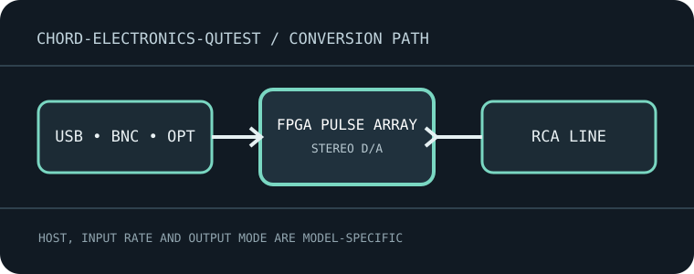

[ INDIVIDUAL MODEL // SOUND HARDWARE ]
Chord Electronics Qutest
Standalone FPGA-based DAC with galvanically isolated USB-B, optical and BNC coaxial digital inputs and RCA analog output.

Model-specific specifications
| Exact model / architecture | Chord proprietary FPGA Pulse Array conversion and selectable digital filters; standalone DAC with no headphone amplifier or ADC. |
|---|---|
| Digital inputs / interface | Galvanically isolated USB-B; one optical input; two BNC coaxial inputs, including dual-data operation when connected to a compatible source. |
| Analog / digital outputs | One stereo RCA analog pair with selectable 1, 2 or 3 V RMS output level; dual BNC digital data connectors are input paths, not analog outputs. |
| Supported formats and rates | USB: PCM 16–32 bit through 768 kHz and native DSD64–DSD512. Coaxial: PCM through 32-bit/384 kHz (dual-data mode up to 768 kHz). Optical: PCM through 24-bit/96 kHz. Check source support for DSD transport and exact S/PDIF mode. |
| Power | 5 V DC, 2 A over Micro-USB power input; provide stable power from the specified adapter, separately from the digital USB-B data link. |
| Drivers / host compatibility | USB audio host connection for computers and compatible streamers; operating-system driver behavior and DSD mode vary by host. Confirm device enumeration and application output selection; the product is not a network device. |
| Compatibility caveats | Qutest has no headphone socket or volume control: connect its RCA output to a line input and set the level before powering downstream equipment. Optical is limited to lower rates than USB/coax. |
Compatibility & preservation
Qutest has no headphone socket or volume control: connect its RCA output to a line input and set the level before powering downstream equipment. Optical is limited to lower rates than USB/coax.
- Record the exact product name, hardware revision, serial range, included power supply, firmware and driver version before service.
- Match digital sample format/rate to the selected physical input and host mode; set downstream amplifier level safely before playback.
- Keep the model-specific manufacturer manual with the device; connector shape alone does not guarantee electrical or protocol compatibility.
Manufacturer sources
- Qutest product and input specificationsManufacturer product documentation for the exact model and its revision-specific operation/specifications.
- Official Qutest user manual (PDF)Manufacturer product documentation for the exact model and its revision-specific operation/specifications.